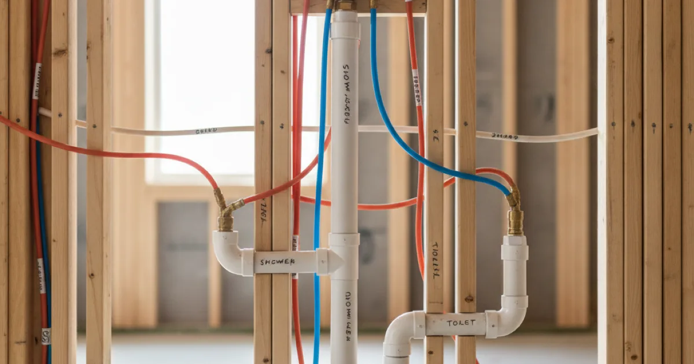

Bathroom Plumbing Remodeling in Westchester County, NY
The plumbing behind your remodel decides whether it lasts. Dan's Drains handles bathroom remodel plumbing — moving lines, connecting fixtures, and testing everything before the walls close.
- Licensed & Insured
- Same-Day Service Available
- Upfront Pricing
- 15+ Years Local Experience

Need a plumber in Westchester County? We can usually help the same day.
What Remodel Plumbing Covers
A bathroom remodel's plumbing includes moving or adding supply and drain lines, setting the rough-in for fixtures, and connecting everything once the finishes are in. It is the part you do not see that makes the part you do see work.
This is the hands-on side of our bathroom plumbing category.
Planning the Plumbing First
The cheapest time to move a drain or supply line is before the walls close. We like to be involved early so we can flag anything harder than it looks and keep the project on schedule.
Good planning here prevents mid-remodel surprises that stall the whole job.
Talk to a local Westchester County plumber today.
How We Handle the Rough-In
We set the supply and drain lines for each fixture, pressure-test the connections, and coordinate timing with the tile and finish work. Once finishes are in, we connect the toilet and other fixtures and confirm everything is leak-free.
Testing before the walls close is what prevents a hidden leak later.
Remodeling Older Local Bathrooms
Opening a wall in an older home here often reveals aging drain and supply lines. While the area is accessible, it is frequently worth updating them, and we will tell you honestly when it is.
For remodel inspiration, the This Old House bathroom resources are helpful, and we handle the plumbing that brings the plan to life.
When to Call a Pro
Bring us in early, as soon as your plans involve moving a fixture or updating pipe. Getting the plumbing planned up front keeps the remodel smooth.
If your project also updates the shower, our shower plumbing installation fits right in.
Frequently Asked Questions
When should I involve a plumber in my remodel?
As early as possible — ideally during planning. Moving a fixture or updating pipe is far easier before the walls close, and early planning keeps the project on schedule.
Can you move fixtures to a new layout?
Often, yes, depending on where the drains and joists are. We will review your plan and tell you honestly what is straightforward and what is involved.
Should I update old pipe during the remodel?
If a wall is open and the pipe is aging, it is usually the cheapest time to update it. We advise when it is worth doing and when it is fine to leave.
Do you pressure-test the new plumbing?
Yes. We test connections before the walls close so a hidden leak does not surface behind your new tile.
Do you work with my contractor?
Yes. We handle the plumbing scope and coordinate timing with your contractor and the finish work.
Ready to book? Reach Dan’s Drains for fast, upfront plumbing help.